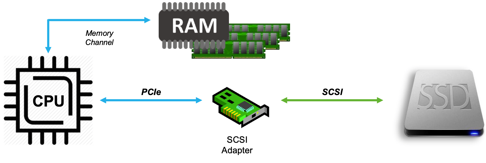
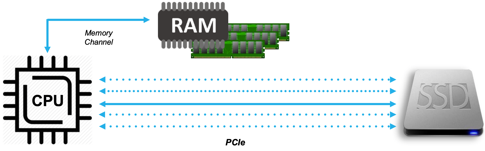
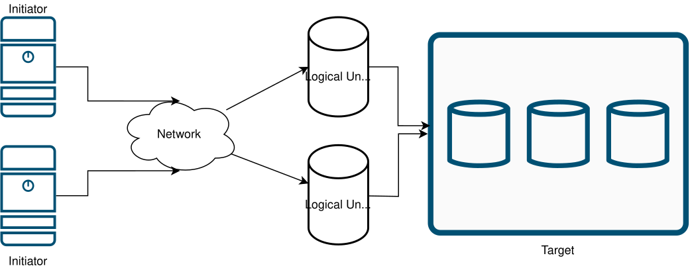
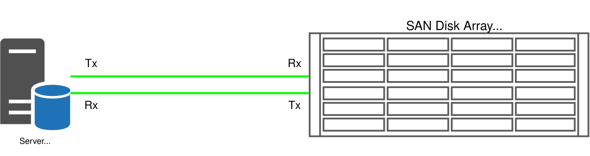
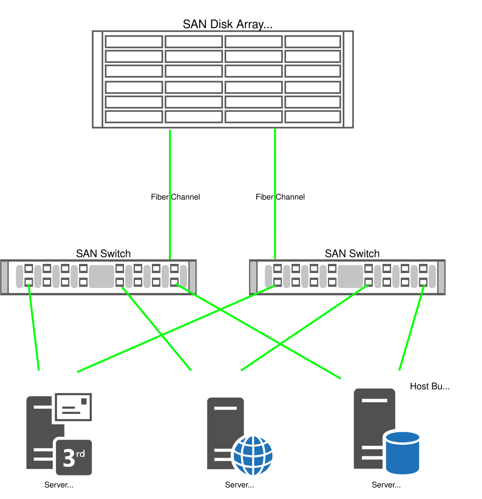
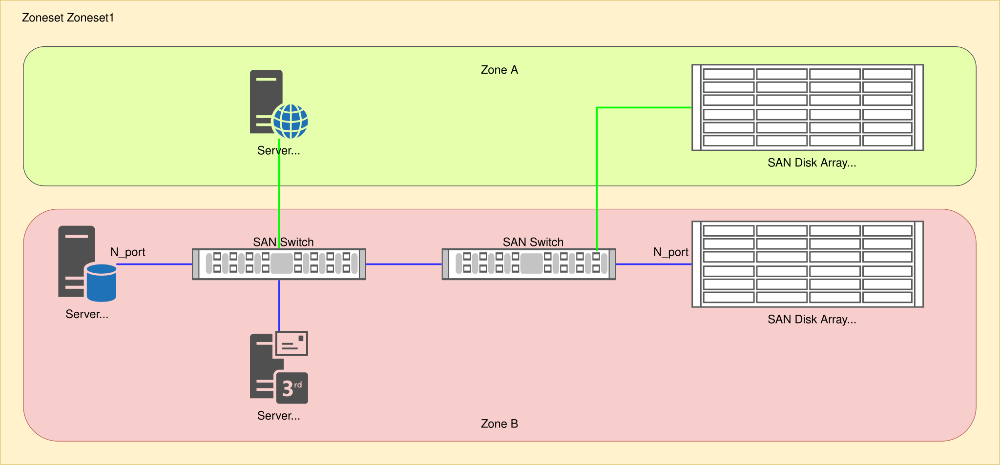
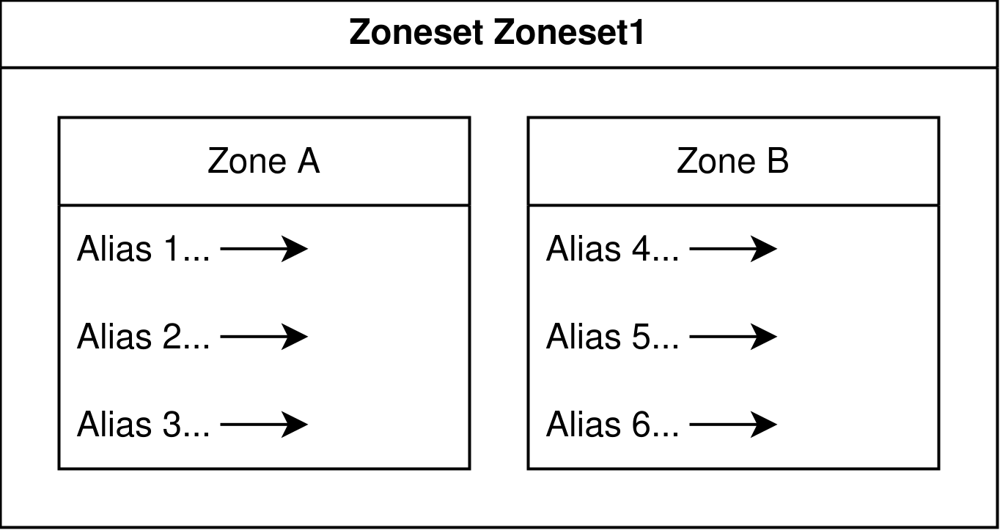
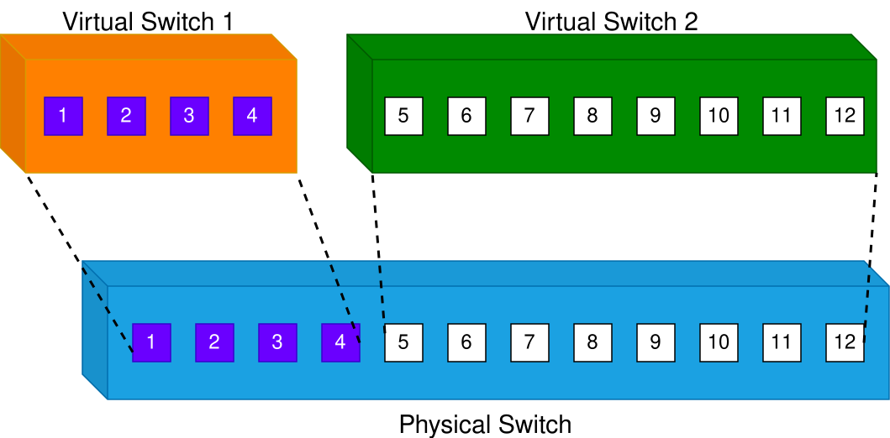
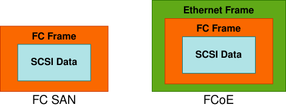

Introduction to Storage and Storage Networking
Introduction to Disk Drive
Disk drives are devices that store and retrieve data on a computer. They come in various shapes, sizes, and technologies, depending on the purpose and performance they offer.
- Hard disk drives (HDDs) are the traditional type of disk drives that use spinning magnetic disks to store data. They have a high storage capacity and a low cost per gigabyte, but they also have some drawbacks. HDDs are prone to mechanical failures, noise, heat and power consumption. They also have a slower speed than other types of disk drives.
- They come in 3.5” or 2.5” form factors
- Forget these drives and concentrate on SSD for the entire course
- Solid state drives (SSDs) are a newer type of disk drives that use flash memory chips to store data. They have no moving parts, which makes them more reliable, quiet, cool and energy-efficient than HDDs. They also have a faster speed and a lower latency than HDDs.
- They come in 3.5”, 2.5”, or 1.8” form factors
- Flash memory is also solid-state storage (int the family of SSDs)
Drive interface families
Disk drive interface which is part of the disk controller connects the disk drive to the computer with a physical connector. Disk drive interface provides a standard protocol for the hard disk drive to talk to the computer. There are many types of disk drive interfaces including:
| Drive Interface Family | Transfer Protocol |
|---|---|
| SATA, eSATA, mSATA | AHCI (Default mode), IDE |
| SAS | iSCSI |
| FC, FCoE | FCP, iSCSI, NVMEoFC |
| PCIe Gen3 or later | NVMe |
SCSI and/or NVMe
Different Philosophies
- SCSI treats storage as devices
- Tape drives, disk drives, scanners
- Allows CPU to talk to devices via SCSI commands
- Requires an adapter that “speaks” SCSI to translate CPU desires into device capabilities
- Creates 1:1 relationship between host and storage

- NVMe (Non-Volatile Memory express) treats storage as memory
- NVMe (Non-Volatile Memory Express) is a protocol designed to use the PCI Express (PCIe) bus to connect SSD (solid-state drive) storage to servers or CPUs.
- CPU can talk to memory natively
- Extend semantics using PCIe
- No adapter needed
- Creates many-to-many relationship between host(s) and target(s)
- NVMe defines a new simplified command set for storage
- Simplified verbs (commands) reduce complexity

Redundant Array of Independent Disks (RAID)
It is better to have lot of little drives than one large drive from 2 aspects:
- Speed
- Data safety
When we combine to above aspects, we come up with different levels of RAID
- RAID 0 (AKA stripe):
- You need minimum of two drives
- System does not see two drives
- You double the read and write speed
- Failure of one drive causes data loss
- Total capacity Ctotal = n x C
- For example if you have 2 drives of 1 TiB each, the total capacity would be 2 TiB
- RAID 1 (AKA Mirroring):
- You need minimum of two drives
- System does not see two drives
- Controller saves data pieces into two disks then in the 3rd disk controller calculate the parity piece and put that into that
- Increased performance to Read and possible increased performance to Write
- If you lose 1 drive data is recoverable, but if you lose 2 drives you lost everything
- Total capacity Ctotal = 1 x C
- For example if you have 2 drives of 1 TiB each, the total capacity would be still 1 TiB
- RAID 5:
- You need minimum of three drives
- System does not see three drives
- Controller saves data pieces into two disks then in the 3rd disk controller calculate the parity piece (XOR of the other two disks) and put that into that
- Since both drives store exact same information, failure of one drive does not cause data loss
- Total capacity Ctotal = (n-1) x C
- For example if you have 3 drives of 1 TiB each, the total capacity would be still 2 TiB
- RAID 10 (RAID 1 + 0):
- RAID 10 is a stripe of mirrors
- You make minumum two drives as RAID 1 which makes a set of mirror
- Then you make another mirrir with another pair
- Then, you stripe the two sets
- RAID 10 is a stripe of mirrors
- You need minimum of four drives
Doing the RAID
- Software RAID: telling the OS; overhead on the OS. In Windows: diskmgmt.msc; for software RAID, disk must be dynamic
- Hardware RAID: we are gonna have some type of controller (RAID Controller). It presents as an array to the OS itself
- Firmware RAID: Take advantage of motherboard which has built-in functionality to setup RAID
What is JBOD
Just a Bunch Of Disks (JBOD) is not configured as a RAID
- Spanned Volume
- You will not get speed and data safety
Network Storage
- DAS: Direct-Attached Storage is a storage connected directly to the server; just for file access in most cases
- NAS: Network-Attached Storage is a storage made available on the network:
- May use SMB/CIFS (Microsoft Windows) or NFS (Unix/Linux)
- File-based - transports only one byte of data at a time
- Try: FreeNAS; Share access file
- SAN: Storage Area Networking
- Block level - transports an entire block of data

Storage Area Network (SAN)
SAN is a dedicated network that is scalable and highly available with the primary purpose of providing high-speed and low latency access to storage. SANs are typically implemented using Fibre Channel (FC). In a SAN architecture, storage devices are typically consolidated into a storage array, which is connected to a network of servers through a storage fabric. The storage fabric provides a high-speed interconnect between the servers and the storage devices, enabling high-performance access to data.
Logical Unit
The storage capacity if SAN storage array has to be shared among the hosts, so it is devided into logical disks assigned to the hosts. These logical disks appear to the host as local disks and are identified by a unique number called the logical unit number (LUN).

LUN Provisioning
LUN provisioning is the process of allocating the physical storage capacity of a storage array to the servers.
Fibre Channel Architecture
FibreChannel is a set of standards that enable high-speed data transfer between different devices. It is widely used in storage area networks (SANs) and other applications that require reliable and fast communication. FibreChannel can operate at speeds of up to 128 Gbit/s and support various topologies and protocols.
- Channel is a peripheral input/output interface that allows direct error-free data transfer between the computer and the devices attach to it (in this cotext: disk)
- Fibre Channel Protocol (FCP) is the serial SCSI command protocol used on Fibre Channel networks
- FC replaces SCSI disk cable with a network
- Protocol stack primary used to send SCSI commands over the SAN
Fibre Channel Terminologies
- Node: Fibre Channel devices (server, storage) are called nodes
- Port: A port is the interface in a node used for external communication. A node will have at least one port
Components of FC SAN
The components of a FC SAN include:
- Servers (Initiators)
- Host bus adapters (HBA)
- Cables
- Storage Switches
- Storage Array (Target)
Host bus adapters
An HBA is an I/O adapter in the form of PCIe expansion card or a component on the motherboard. They are like NIC cards frostorage network
- Native FC HBA: SAN only
- packet format: |FC|FCP|SCSI|
- iSCSI HBA: LAN + iSCSI hardware offload; Data and Storage are both IPv4 or IPv6
- packet format: |ETH|IP|TCP|SCSI|
- FCoE CNA/VIC: LAN + FCoE hardware offload
- Packet format: |ETH|FCOE|FCP|SCSI|
Storage Switches
A fibre Channel switch is a device that provides central connection points for servers and Fibre Channel devices to communicate with each other.
- Cisco has supported FC and FCoE networking on previous Nexus families; Nexus 5000, Nexus 6000 and Nexus 7000.
- N7K: Dedicated Storage VDC, Supports only FCoE
- N5K: Support for FC, FCoE
- Today, Nexus 9000 products support FC and FCoE for both NX-OS and ACI modes.
- All Nexus 9000 FC/FCoE switches only support NPV mode today, no native FC/FCoE switching
- All FC Services (Zoning, Names Server, etc) reside on core FC/FCoE switch with NPIV enabled
- MDS: Support for FC, FCoE, FCIP
- Director: means bigger switch - more levels of redundancy
Cisco N5K has support for both FC and FCoE. To convert an interface type from Ethernet to fc you need to change port type to fc, then reload the switch.
N5K1(config)# slot 1 N5K1(config-slot)# port 31-32 type fc N5K1(config-slot)# copy run start N5K1(config-slot)# reload
Storage
- Physical disk enclosures
- Configurations
- JBOD
- Storage Array
- EMC2
- NetApp
- HP
Fibre Channel Port Types
- N_Port - Node port
- Available on the initiator and the target
- Full duplex
- In both P2P or SW fabric topologies
- F_Port - Fabric port
- Switch’s port that connects to a N_port
- Logically equivalent to Access Port in Ethernet
- E_port - Expantion port
- Connects a FC switch to another FC switch with a cabled called Inter-Switch Link (ISL)
- Switches will run routing protocol (FSPF) between them on E_port
- TE_port
- Analogous to dot1q
- When running VSAN
Types of Topologies
Fibre Channel architecture provides three topologies
- Point-to-point
- Dirrect connection between the initiator and the server
- For example if a Storage array has four FC ports, then four servers can connect to the Storage Array

- Arbitrated Loop
- The devices are connected to each other to form a circular data path, called a loop
- Switched Fabric
- A fabric is a storage area network buil with at least one FC switch
- In a switched-fabric topology each device connects to a FC switch
- Highly available ans scalable
- A good SAN
- A server with two HBAs
- Two Fibre Channel switches
- A dual-controller storage arrays

Fibre Channel Addressing
Each entity in a Fibre Channel network is uniquely identified by a 64-bit address, called a Worl Wide Name (WWN).
- WWNs are represented in hexadecimal pairs. Example: 21:00:00:e0:8b:05:05:04
- Not used in Data Plane - Only in Control Plane - to figure out who is allowed to talk to who - like ACL * Zoning
- Two types of WWNs
- WWNN or nWWN:
- Assigned to network card
- Uniquely identifies each device on the FC network
- WWPN or pWWN: Assigned to physical port
- Uniquely identifies each port in a device
- This is important - You need this to manually create the boot policies of either UCS-C or B servers
- Boot policy is like a static route - you do not know where the disk is, you need to program it in on the UCS servers
- You also need pWWN in zoning
- WWNN or nWWN:
Fibre Channel Identifier (FCID)
- 3 bytes
- assigned by FCNS by lldp
show topologyreplacedshow lldp
- Domain ID: 1 Byte - equivalent to subnet - used for routing by FSPF (/8 is for routing)
- The FC standard allows a maximum of 239 port addresses that can be used for domain IDs
- Can be manually assigned, otherwise automatically assigned –> principal switch assigns automatically as soon as you no shut the link
- Area ID: 1 Byte - unique for a group of ports
- Port ID: 1 Byte - unique per port
- assigned by FCNS by lldp
! The four Inter-Switch Links (ISLs) are listed here in the snippet example below:
edge-1# show topology
FC Topology for VSAN 1 :
--------------------------------------------------------------------------------
Interface Peer Domain Peer Interface Peer IP Address(Switch Name)
--------------------------------------------------------------------------------
fc1/3 0x67(103) fc1/3 198.19.254.123(core-1)
fc1/4 0x67(103) fc1/4 198.19.254.123(core-1)
fc1/5 0x67(103) fc1/5 198.19.254.123(core-1)
fc1/6 0x67(103) fc1/6 198.19.254.123(core-1)
Charactristics of FC switches
Each switch is ientified by a unique domain ID. Domain IDs are assigned to the switches in the fabric by a switch in the fabric, called the proncipla switch. FC switches provide fabric services to the devices in the fabric. The fabric services provide information to the devices connected to the fabric. Some of fabric services include:
- Name Server:
- Central repository of information about the fabric
- Whenever a device is added to the network, it registers itself with the name server
- There is only one name server for the entire fabric
- The name server information is shared with the name servers of all the switches, making it a distributed name server
- Mapping between pWWNs and FCIDs
- Resolution of physical address to logical address
- No configuration required
show fcns database- shared with all switches in the fabric
- Login Server:
- A device that needs to connect to the fabric must send a login request to the well-known address (0xFFFFFE) of the login server
- Fibre Channel Routing
- Remember WWNs are not part of data plane -> no flood and learn
- FSPF is used to route traffic between switches
- Based on Domain ID part of FCID
- ECMP is supported for equal SPT branches
- No configuration required
! Displaying Name Server Database Entries The name server stores name entries
! for all hosts in the FCNS database. In a multiswitch fabric
core-1(config-if)# show fcns database
VSAN 1:
--------------------------------------------------------------------------
FCID TYPE PWWN (VENDOR) FC4-TYPE:FEATURE
--------------------------------------------------------------------------
0x3f0000 N 10:00:00:10:9b:23:43:bb (Emulex) scsi-fcp:init
0x3f0020 N 10:00:00:10:9b:23:43:c1 (Emulex) scsi-fcp:init
0xc80000 N 52:4a:93:7e:47:1d:ce:01 scsi-fcp:target
0xc80020 N 52:4a:93:7e:47:1d:ce:10 scsi-fcp:target
Total number of entries = 4
Fabric Registeration Process
Fibre Channel networks are connection oriented. All end stations must first register with control plane. Fabric Registration has three parts
- Fabric login (FLOGI)
Though a server or a storage device is physically connected to a fabric, the logical connection is established only when it executes the fabric login, or FLOGI process.
- The goal is to assign FCID to the node
- N_Port tells switch’s Fabric F_Port it wants to register
- Switches learn WWNN and WWPN of Node
- You can find this as a three-way handshake
show flogi database- Local to the switch
- Port Login (PLOGI)
- Necessary for the data exchange to take place between the end devices
- Like TCP 3-way handshake; end to end between the initiator and target
- Used for apps such as e2e flow control
- Process Login (PLRI)
- PLRI (Process Login)
- Like SCSI registration - to read and write traffic
! In a Fibre Channel fabric, each host or disk requires an Fibre Channel ID.
! Use the show flogi database, to show the devices in the Fabric Login table
core-1(config-if)# show flogi database
--------------------------------------------------------------------------------
INTERFACE VSAN FCID PORT NAME NODE NAME
--------------------------------------------------------------------------------
fc1/1 1 0xc80000 52:4a:93:7e:47:1d:ce:01 52:4a:93:7e:47:1d:ce:01
fc1/2 1 0xc80020 52:4a:93:7e:47:1d:ce:10 52:4a:93:7e:47:1d:ce:10
Total number of flogi = 2.
```
Zoning
Initiators are not aware of targets. Techniques were developed to provide the servers restricted access to the storage devices by subdeviding the SAN into private networks. Each such private network provided coordinated sharing of shared storage within its network. These techniques have diferent names depending on where they are implemented:
- If it is implemented in a switch, it is called zoning
- If it is implemented in an HBA, it is called LUN masking
- It it is implemented in a RAID, it is called LUN mapping
All thechniques work on the principla of restricting access by blocking a range of addresses.
The device in a zone cannot communicate with devices outside the zone. Devices not included in any zone are not accessible to any other devices in the fabric. When no zoning is enabled, the fabric is said to be in a default zone
- Access can be either open or closed
Zoning is a distributed fabric service
- Switches must agree on the zoneset before they can forward the traffic
- If zoneset merge fails, the port becomes disabled
- Zoning should be your very final step in FC configuration
A zone is esstentially a collection of end device, or N_ports, that are allowed to communicate with each other.
- It is recommended for a zone to have a single server and one or more storage ports. This approach is called single initiator zoning.
There are two types of zoning:
- WWN zoning: Allows the connectivity between the nodes based on their WWNs
- Port Zoning: Allows the connectivity based on the port number of the switch
A zone set is a collection of zones. There can be hundreds of zones in a zoneset. Only one zoneset including all those zones can be active in the fabric at a time.

!Zone Database Section for vsan 1 core-1(config)# zone name Zone1 vsan 1 Enhanced zone session has been created. Please 'commit' the changes when done. core-1(config-zone)# member pwwn 52:4a:93:7e:47:1d:ce:01 core-1(config-zone)# member pwwn 52:4a:93:7e:47:1d:ce:10 core-1(config-zone)# member pwwn 10:00:00:10:9b:23:43:bb core-1(config-zone)# member pwwn 10:00:00:10:9b:23:43:c1 core-1(config-zone)# core-1(config-zone)# zoneset name Zoneset1 vsan 1 core-1(config-zoneset)# member Zone1 core-1(config-zoneset)# core-1(config-zoneset)# zone commit vsan 1 Commit operation initiated. Check zone status core-1(config)# core-1# show zoneset active vsan 1 zoneset name Zoneset1 vsan 1 zone name Zone1 vsan 1 * fcid 0xc80000 [pwwn 52:4a:93:7e:47:1d:ce:01] * fcid 0xc80020 [pwwn 52:4a:93:7e:47:1d:ce:10] * fcid 0x3f0000 [pwwn 10:00:00:10:9b:23:43:bb] * fcid 0x3f0020 [pwwn 10:00:00:10:9b:23:43:c1]
A zone alias is the custom name that is assigned to a port address or WWN address in a zone.
- This is because port addresses and WWN addresses are difficult to read and memorize.

LUN Masking
LUN masking provides the servers with restricted access to the logical units of the storage array. It determines which logical units can be accessed by which servers. It does so by mapping a server’s pWWN to multiple Storages.
- Storage array listens on separate port for separate initiator - then maps to the same logical volume
- Server sees both of the paths going to the same storage
Virtual Fabric or Virtual SAN (VSAN)
The VSAN tachnology allows a large SAN to be logically partitioned into small SANs called virtual fabrics or VSANs.
- E_ports now become TE_Ports
- Behind the scenes the switch runs multiple copies of routing (FSPF)
- Same logic as multiple separate OSPF processes
- VSAN is routing topology - link state flooding domain
- Separate FLOGI database
- Separate Zone set
- VLAN ID is important for FCoE
- VSAN ID is important for native FC

N_Port ID Virtualization (NPIV)
The present day trend is datacenters is to use server virtualization to avoid proliferation of physical server. The VMs share the same physical HBA, as a result, has the same WWN to the LUN.
In a non-virtualized environment, an N_Port has both a WWPN and an N_Port ID. N_Port ID virtualization, or NPIV is an ANSI standard that allows:
- Single HBA port to register as multiple WWPNs in the fabric
- Each registered WWPN is assigned a unique N_Port ID
- NPIV allows a single physical N_Port to acquire multiple N_Port IDs
- Each N_Port ID can be mapped to a difefrent initiator, such as a VM
- This allows the creation of multiple virtual links over a single physical link by mapping many N_Port IDs with one F_Port
- NPIV-capable HBAs and NPIV-capable of switches required
- Configuration requires
feature npiv
- Configuration requires
- Each VM can now have a separate WWPN and its zoning can be managed independently
- Logical equivalent of NAT translation
N_Port Virtualization (NPV)
The N_Port Virtualizer, or NPV, is based on N_Port ID virtualization but implemented at switch level. NPV allows an NPI-enabled edge switch to bundle the connections it receives from end devices or N_Ports into one or more connections that link to a core switch. The requirement is that the core switch supports NPIV features. An NPIV-enabled edge switch does not require separate domain IDs to receive connectivity from the fabric and doesn’r participate in fabric services.
SAN Port Channeling
Like Ethernet PortChannel. But If you do not do port channel, you are routing equal cost. That is why Between switches you do not need PO. However, end hosts can do default route one-way; hence, you need PO here at access layer.
- The negotiation protocol is called PCP (logically like 802.3ad)
- UCS FI supports only active mode
- First step: wwn the port
- Then Configure the PO
- Very last step: No shutdown the port
- Why?
- Otherwise the interface goes down and you might need to reboot the box.
- Types of PO
- Actice/Passive mode: takes care of only fail-over recovery
- Active/Active mode: I/O requests are shared equally across all the available paths
- On MDS, you can only define SAN port-channel, so if you need to configure the SAN portchannel, you only need to go in
interface port-cahnnel. However, since N5K supports both Ethernet as well as SAN port Channels, you need to enablefeature fport-channel-trunkand go underinterface san-port-cahnnelwhen addressing any configuration under the SAN port-channel.
! core-1 configuration example core-1# configure core-1(config)# interface fc1/3-6 core-1(config)# channel-group 12 force core-1(config)# no shut core-1(config)# interface port-channel112 core-1(config)# switchport mode E core-1(config)# switchport description To edge-1 core-1(config)# switchport rate-mode dedicated core-1(config)# switchport trunk mode auto ! edge-1 configuration example edge-1# configure edge-1(config)# interface fc1/3-6 edge-1(config)# channel-group 11 force edge-1(config)# no shut edge-1(config)# interface port-channel111 edge-1(config)# switchport mode E edge-1(config)# switchport description To core-1 edge-1(config)# switchport rate-mode dedicated edge-1(config)# switchport trunk mode auto ! Verification on core-1 core-1(config)# show port-channel database port-channel112 Administrative channel mode is active Operational channel mode is active Last membership update succeeded First operational port is fc1/3 4 ports in total, 4 ports up Ports: fc1/3 [up] * fc1/4 [up] fc1/5 [up] fc1/6 [up] core-1(config)# show interface brief | i edge|core fc1/1 1 auto on up swl F 16 -- edge fc1/2 1 auto on up swl F 16 -- edge fc1/3 1 E auto up swl E 16 112 core fc1/4 1 E auto up swl E 16 112 core fc1/5 1 E auto up swl E 16 112 core fc1/6 1 E auto up swl E 16 112 core port-channel112 1 auto up E 64 -- core ! Verification on edge-1 edge-1(config)# show port-channel database port-channel111 Administrative channel mode is active Operational channel mode is active Last membership update succeeded First operational port is fc1/3 4 ports in total, 4 ports up Ports: fc1/3 [up] * fc1/4 [up] fc1/5 [up] fc1/6 [up]
Converged Networking
Network convergence concerns combining an Ethrnet LAN and a Fibre Channel SAN into a single unified network that can carry both server trafic and storage traffic over a single network cable.
The challenge is that with Ethernet when there is network congestion, the Ethernet drops frames, so the higher-layer protocols are used to ensure that the frames are retransmitted whenb they drop. Since Ethernet drops the frames, it is considered as a lossy network. Compared to Ethernet, Fibre Channel is considered lossless network.
In the simple context of data transmission speeds, the speeds of Ethernet have exceeded the available speeds of FC. Furthuremore, Ethernet can now be enriches with the capabilities that makes it a low-latency and lossless network similar to FC.
The converghed network uses enhanced Ethernet capabilities to combine both storage and network trafficon a single network. The server is using only one converged network adapter.
FCoE
Most people assume FC and FCoE are either 1) totally different or 2) different enough that they cannot be intermixed. In reality, FC and FCoE are the same Fibre Channel protocols running on different physical media. That means everything traditional FC offers (fabric services, zoning, etc) are identical between FC and FCoE.

The FCoE infrastructure consists if three components:
- A Convergged Network Adapter (CNA)
- A single CNA connects the server to an FCoE switch, which in turn provides connectivity to LAN and SAN
- Server OS does not see FCoE device. IT sees two deparate devices: an HBA and a NIC
- FCoE switch
- inspects the EtherType of the frame
- can convert FC to FCoE
- can convert FCoE to FC
- inspects the EtherType of the frame
- Losseless Ethernet links
With FCoE, any lost frames can be recovered only at the SCSI layer because it has no TCP. Fortunately, a set of enhancements are available to the Ethernet to support the lossless behavior; that is called Data Center Bridging (DCB). DCB is also referred to as Converged Enhanced Ethernet.
The configuration relative to native FC includes encapsulating FC inside FCoE.
N5K1# configure terminal N5K1(config)# feature fcoe N5K1(config)# interface ethernet 1/1 N5K1(config-if)# description FCoE Uplink N5K1(config-if)# switchport mode trunk N5K1(config-if)# switchport trunk allowed vlan 10 N5K1(config-if)# no shut ! Create the Virtual FibreChannel port which allows you to issue SAN commands under it N5K1(config)# interface vfc 10 N5K1(config-if)# bind interface ethernet 1/1 N5K1(config-if)# switchport mode E N5K1(config-if)# switchport trunk allowed vlan 10 N5K1(config-if)# no shut ! Configure FCoE VLAN and VSAN. Here VLAN10 will carry VSAN10'a traffic N5K1(config)# vlan 10 N5K1(config-vlan)# fcoe vsan 10 N5K1(config-vlan)# exit N5K1(config)# vsan database N5K1(config-vsan-db)# vsan 10 interface vfc 10 N5K1(config-vsan-db)# exit
Storage Networking Workshop
In this workshop, I am going to follow Cisco MDS (Multilayer Director Switch) Lab v1 lab onCisco dCloud portal. Here is the topology

Configuration
feature analytics
ip host core-1 198.19.254.123
fcdomain fcid database
vsan 1 wwn 20:03:00:3a:9c:54:21:80 fcid 0x670000 dynamic
vsan 1 wwn 20:04:00:3a:9c:54:21:80 fcid 0x670020 dynamic
vsan 1 wwn 52:4a:93:7e:47:1d:ce:14 fcid 0x670040 dynamic
vsan 1 wwn 52:4a:93:7e:47:1d:ce:04 fcid 0x670060 dynamic
vsan 1 wwn 20:05:00:3a:9c:54:21:80 fcid 0x670080 dynamic
vsan 1 wwn 52:4a:93:7e:47:1d:ce:05 fcid 0x670061 dynamic
vsan 1 wwn 52:4a:93:7e:47:1d:ce:15 fcid 0x670041 dynamic
!Active Zone Database Section for vsan 1
zone name Zone1 vsan 1
member pwwn 10:00:00:10:9b:23:43:df
member pwwn 10:00:00:10:9b:23:43:e5
member pwwn 52:4a:93:7e:47:1d:ce:15
member pwwn 52:4a:93:7e:47:1d:ce:05
zoneset name Zoneset1 vsan 1
member Zone1
zoneset activate name Zoneset1 vsan 1
do clear zone database vsan 1
interface mgmt0
ip address 198.19.254.123 255.255.255.0
interface port-channel112
switchport mode E
switchport description To edge-1
switchport rate-mode dedicated
switchport trunk mode auto
switchname core-1
interface fc1/3
switchport speed auto
interface fc1/4
switchport speed auto
interface fc1/5
switchport speed auto
interface fc1/6
switchport speed auto
interface fc1/3
switchport mode E
interface fc1/4
switchport mode E
interface fc1/5
switchport mode E
interface fc1/6
switchport mode E
interface fc1/1
port-license acquire
no shutdown
interface fc1/2
port-license acquire
no shutdown
interface fc1/3
analytics type fc-scsi
switchport trunk mode auto
port-license acquire
channel-group 112 force
no shutdown
interface fc1/4
analytics type fc-scsi
switchport trunk mode auto
port-license acquire
channel-group 112 force
no shutdown
interface fc1/5
analytics type fc-scsi
switchport trunk mode auto
port-license acquire
channel-group 112 force
no shutdown
interface fc1/6
analytics type fc-scsi
switchport trunk mode auto
port-license acquire
channel-group 112 force
no shutdown
ip default-gateway 198.19.254.1feature analytics
ip host edge-1 198.19.253.228
fcdomain fcid database
vsan 1 wwn 10:00:00:10:9b:23:43:df fcid 0x200000 dynamic
vsan 1 wwn 10:00:00:10:9b:23:43:e5 fcid 0x200020 dynamic
vsan 1 wwn 20:05:00:de:fb:fd:db:90 fcid 0x200040 dynamic
vsan 1 wwn 20:03:00:de:fb:fd:db:90 fcid 0x200060 dynamic
vsan 1 wwn 20:04:00:de:fb:fd:db:90 fcid 0x200080 dynamic
!Active Zone Database Section for vsan 1
zone name Zone1 vsan 1
member pwwn 10:00:00:10:9b:23:43:df
member pwwn 10:00:00:10:9b:23:43:e5
member pwwn 52:4a:93:7e:47:1d:ce:15
member pwwn 52:4a:93:7e:47:1d:ce:05
zoneset name Zoneset1 vsan 1
member Zone1
zoneset activate name Zoneset1 vsan 1
do clear zone database vsan 1
!Full Zone Database Section for vsan 1
zone name Zone1 vsan 1
member pwwn 10:00:00:10:9b:23:43:df
member pwwn 10:00:00:10:9b:23:43:e5
member pwwn 52:4a:93:7e:47:1d:ce:15
member pwwn 52:4a:93:7e:47:1d:ce:05
zoneset name Zoneset1 vsan 1
member Zone1
interface mgmt0
ip address 198.19.253.228 255.255.255.0
interface port-channel111
switchport mode E
switchport description To core-1
switchport rate-mode dedicated
switchport trunk mode auto
switchname edge-1
interface fc1/3
switchport speed auto
interface fc1/4
switchport speed auto
interface fc1/5
switchport speed auto
interface fc1/6
switchport speed auto
interface fc1/3
switchport mode E
interface fc1/4
switchport mode E
interface fc1/5
switchport mode E
interface fc1/6
switchport mode E
interface fc1/1
port-license acquire
no shutdown
interface fc1/2
port-license acquire
no shutdown
interface fc1/3
analytics type fc-scsi
switchport trunk mode auto
port-license acquire
channel-group 111 force
no shutdown
interface fc1/4
analytics type fc-scsi
switchport trunk mode auto
port-license acquire
channel-group 111 force
no shutdown
interface fc1/5
analytics type fc-scsi
switchport trunk mode auto
port-license acquire
channel-group 111 force
no shutdown
interface fc1/6
analytics type fc-scsi
switchport trunk mode auto
port-license acquire
channel-group 111 force
no shutdown
ip default-gateway 198.19.253.1Verification
core-1# show flogi database
--------------------------------------------------------------------------------
INTERFACE VSAN FCID PORT NAME NODE NAME
--------------------------------------------------------------------------------
fc1/1 1 0x670061 52:4a:93:7e:47:1d:ce:05 52:4a:93:7e:47:1d:ce:05
fc1/2 1 0x670041 52:4a:93:7e:47:1d:ce:15 52:4a:93:7e:47:1d:ce:15
Total number of flogi = 2.
core-1# show fcns database
VSAN 1:
--------------------------------------------------------------------------
FCID TYPE PWWN (VENDOR) FC4-TYPE:FEATURE
--------------------------------------------------------------------------
0x200000 N 10:00:00:10:9b:23:43:df (Emulex) scsi-fcp:init
0x200020 N 10:00:00:10:9b:23:43:e5 (Emulex) scsi-fcp:init
0x670041 N 52:4a:93:7e:47:1d:ce:15 scsi-fcp:target
0x670061 N 52:4a:93:7e:47:1d:ce:05 scsi-fcp:target
Total number of entries = 4
core-1# show fcns database local
VSAN 1:
--------------------------------------------------------------------------
FCID TYPE PWWN (VENDOR) FC4-TYPE:FEATURE
--------------------------------------------------------------------------
0x670041 N 52:4a:93:7e:47:1d:ce:15 scsi-fcp:target
0x670061 N 52:4a:93:7e:47:1d:ce:05 scsi-fcp:target
Total number of local entries = 2
core-1#
core-1# show zone status vsan 1
VSAN: 1 default-zone: deny distribute: active only Interop: default
mode: basic merge-control: allow
session: none
hard-zoning: enabled broadcast: unsupported
smart-zoning: disabled
rscn-format: fabric-address
activation overwrite control: disabled
Default zone:
qos: none broadcast: unsupported ronly: unsupported
Full Zoning Database :
DB size: 124 bytes
Zonesets: 0 Zones: 0 Aliases: 0
Active Zoning Database :
DB Size: 84 bytes
Name: Zoneset1 Zonesets: 1 Zones: 1
Current Total Zone DB Usage: 208 / 4000000 bytes (0 % used)
Pending (Session) DB size:
Full DB Copy size: n/a
Active DB Copy size: n/a
SFC size: 208 / 4000000 bytes (0 % used)
Status: Activation completed at 01:25:26 UTC May 14 2023
core-1# show zoneset active vsan 1
zoneset name Zoneset1 vsan 1
zone name Zone1 vsan 1
* fcid 0x200000 [pwwn 10:00:00:10:9b:23:43:df]
* fcid 0x200020 [pwwn 10:00:00:10:9b:23:43:e5]
* fcid 0x670041 [pwwn 52:4a:93:7e:47:1d:ce:15]
* fcid 0x670061 [pwwn 52:4a:93:7e:47:1d:ce:05]edge-1# show flogi database
--------------------------------------------------------------------------------
INTERFACE VSAN FCID PORT NAME NODE NAME
--------------------------------------------------------------------------------
fc1/1 1 0x200020 10:00:00:10:9b:23:43:e5 20:00:00:10:9b:23:43:e5
fc1/2 1 0x200000 10:00:00:10:9b:23:43:df 20:00:00:10:9b:23:43:df
Total number of flogi = 2.
edge-1# show fcns database
VSAN 1:
--------------------------------------------------------------------------
FCID TYPE PWWN (VENDOR) FC4-TYPE:FEATURE
--------------------------------------------------------------------------
0x200000 N 10:00:00:10:9b:23:43:df (Emulex) scsi-fcp:init
0x200020 N 10:00:00:10:9b:23:43:e5 (Emulex) scsi-fcp:init
0x670041 N 52:4a:93:7e:47:1d:ce:15 scsi-fcp:target
0x670061 N 52:4a:93:7e:47:1d:ce:05 scsi-fcp:target
Total number of entries = 4
edge-1# show fcns database local
VSAN 1:
--------------------------------------------------------------------------
FCID TYPE PWWN (VENDOR) FC4-TYPE:FEATURE
--------------------------------------------------------------------------
0x200000 N 10:00:00:10:9b:23:43:df (Emulex) scsi-fcp:init
0x200020 N 10:00:00:10:9b:23:43:e5 (Emulex) scsi-fcp:init
Total number of local entries = 2
edge-1#
edge-1# show zone status vsan 1
VSAN: 1 default-zone: deny distribute: active only Interop: default
mode: basic merge-control: allow
session: none
hard-zoning: enabled broadcast: unsupported
smart-zoning: disabled
rscn-format: fabric-address
activation overwrite control: disabled
Default zone:
qos: none broadcast: unsupported ronly: unsupported
Full Zoning Database :
DB size: 280 bytes
Zonesets: 1 Zones: 1 Aliases: 0
Active Zoning Database :
DB Size: 84 bytes
Name: Zoneset1 Zonesets: 1 Zones: 1
Current Total Zone DB Usage: 364 / 4000000 bytes (0 % used)
Pending (Session) DB size:
Full DB Copy size: n/a
Active DB Copy size: n/a
SFC size: 364 / 4000000 bytes (0 % used)
Status: Activation completed at 01:25:19 UTC May 14 2023
edge-1# show zoneset active vsan 1
zoneset name Zoneset1 vsan 1
zone name Zone1 vsan 1
* fcid 0x200000 [pwwn 10:00:00:10:9b:23:43:df]
* fcid 0x200020 [pwwn 10:00:00:10:9b:23:43:e5]
* fcid 0x670041 [pwwn 52:4a:93:7e:47:1d:ce:15]
* fcid 0x670061 [pwwn 52:4a]